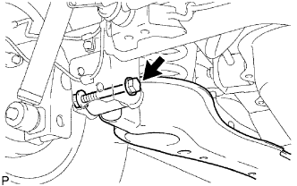
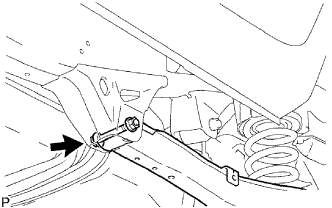

THANH ĐIỀU KHIỂN DƯỚI PHÍA SAU > THÁO |
| 1. THÁO BÁNH XE SAU |
| 2. NGẮT CỤM CÁP PHANH TAY NO.3 |
Ngắt cáp phanh tay (Xem trang Kích chuột vào đây).
| 3. THÁO CỤM THANH ĐIỀU KHIỂN DƯỚI PHÍA SAU TRÁI |
|  |
Tháo đai ốc và bu lông ra khỏi vỏ cầu xe.
|  |
Tháo đai ốc, bu lông và thanh điều khiển.